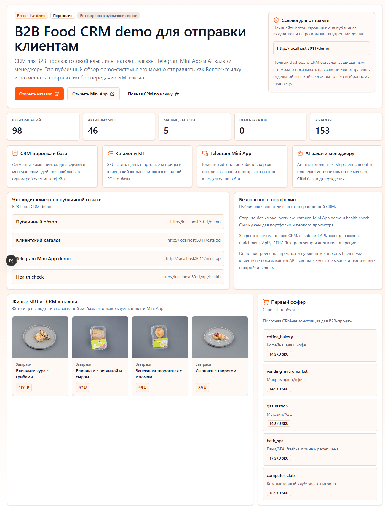

Что проверять
Public repo, reusable skill framing и способ превращать один опыт в повторяемый паттерн.
Project proof page
Skill-подход к созданию Telegram voice agents: не один одноразовый бот, а воспроизводимая фабрика сценариев, инструкций и ассистентов.

Public repo, reusable skill framing и способ превращать один опыт в повторяемый паттерн.
Проектирование агентного skill как производственного шаблона, а не ручной разовой сборки.
Команда быстрее создает новые voice agents с одинаковой дисциплиной и ожидаемым результатом.
Когда процесс повторяется, его нужно превращать в skill. Human это сделал.